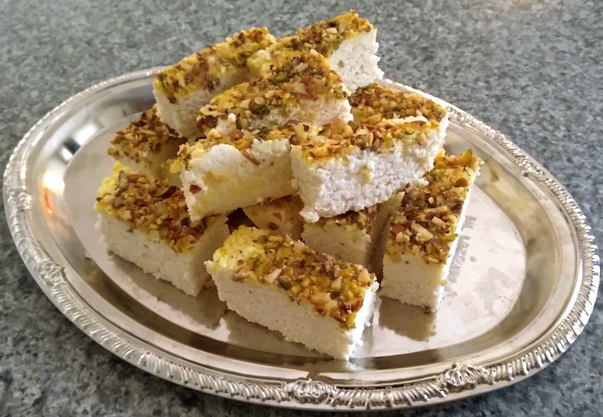
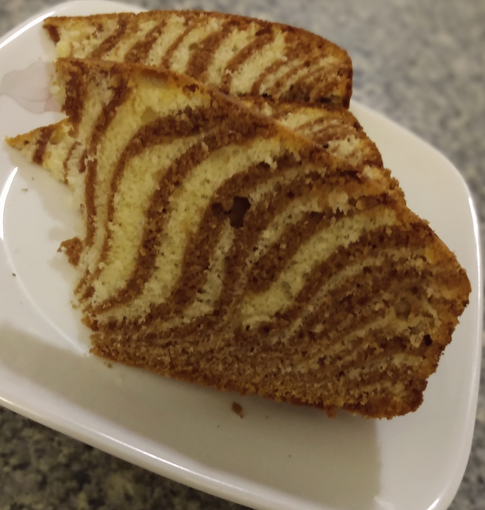
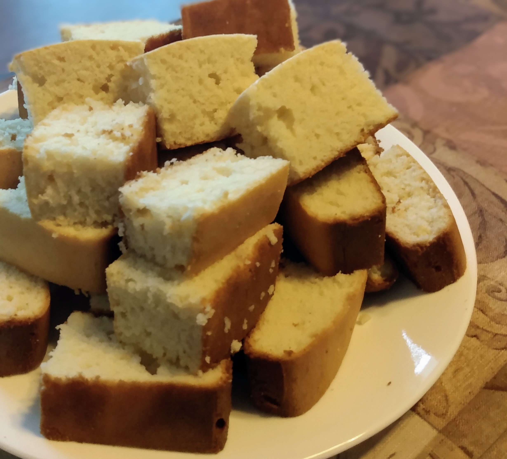

classic penne alfredo
Prep : 15 min | Cook : 30 min
gulab jamun
Prep : 20 min | Cook : 45 min
chicken momos
Prep : 45 min | Cook : 1 hr
Eggless Chocolate Cake
Prep : 30 min | Cook : 1 hr
Eggless Chocolate Chip Cookies
Prep : 30 min | Cook : 1 hr
Kalakand
Prep : 20 min | Cook : 30 min
Pepper Cheese Toast
Prep : 20 min | Cook : 30 min
Shakshuka
Prep : 30 min | Cook : 30 min
Eggless Shrewsbury Biscuits
Prep : 30 min | Cook : 1 hr
Kesar Peda
Prep : 20 min | Cook : 1 hr
Marble Cake
Prep : 30 min | Cook : 1 hr
Eggless Mawa Cake
Prep : 30 min | Cook : 1 hr